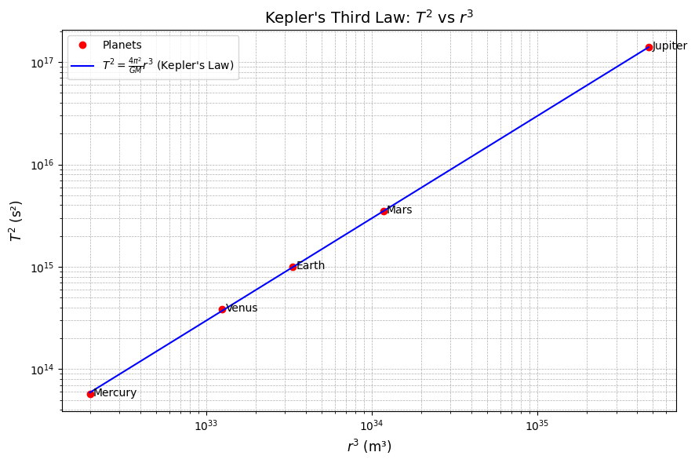

Problem 1
Investigating the Orbital Period and Orbital Radius Relationship
✅ 1. Theoretical Foundation
🔹 Newton's Law and Circular Motion
We begin with Newton's law of universal gravitation:
where:
- \(F\) is the gravitational force,
- \(G\) is the gravitational constant \((6.674 \times 10^{-11}\ \text{Nm}^2/\text{kg}^2)\),
- \(M\) is the mass of the central body (e.g. the Sun),
- \(m\) is the mass of the orbiting body,
- \(r\) is the orbital radius.
For circular motion, this gravitational force provides the centripetal force:
Equating the two expressions:
Canceling \(m\) and solving for velocity \(v\):
We now use the relationship between orbital speed and period:
Substitute into the velocity equation:
Expanding and simplifying:
Multiply both sides by \(r\):
Solve for \(T^2\):
✅ Interpretation
This is Kepler’s Third Law for circular orbits:
This means that the square of the orbital period is proportional to the cube of the orbital radius, for objects orbiting the same central body.
🔹 Why This Matters
Kepler’s Third Law is crucial in astronomy:
- It allows astronomers to calculate planetary masses by observing orbital periods and distances.
- Helps in measuring distances in space, like between planets or satellites.
- It is used to detect exoplanets by observing the periodic wobble of stars.
- Although Kepler derived it empirically, Newton’s law of gravitation explains it theoretically.
✅ 2. Real-World Examples
🔹 Example: The Moon Orbiting the Earth
- Orbital radius: \(r \approx 384,400\) km
- Orbital period: \(T \approx 27.3\) days = \(2.36 \times 10^6\) seconds
Check that \(T^2 \propto r^3\):
Their ratio is nearly constant, consistent with the law.
🔹 Example: Planets in the Solar System
| Planet | Radius (AU) | Period (Years) | \(T^2\) | \(r^3\) |
|---|---|---|---|---|
| Mercury | 0.39 | 0.24 | 0.0576 | 0.0593 |
| Venus | 0.72 | 0.62 | 0.3844 | 0.3732 |
| Earth | 1.00 | 1.00 | 1.0000 | 1.0000 |
| Mars | 1.52 | 1.88 | 3.5344 | 3.5127 |
| Jupiter | 5.20 | 11.86 | 140.67 | 140.61 |
As you can see, \(T^2 \approx r^3\).

✅ 3. Computational Modeling (Python)
🔹 Simulate Orbital Motion and Periods
import numpy as np
import matplotlib.pyplot as plt
# Constants
G = 6.674e-11
M_sun = 1.989e30
# Radii from 0.2 AU to 5 AU
AU = 1.496e11
radii = np.linspace(0.2, 5, 10) * AU
# Compute periods using Kepler's Law
periods = np.sqrt(4 * np.pi**2 * radii**3 / (G * M_sun))
# Plot T^2 vs r^3
plt.figure(figsize=(7, 5))
plt.plot(radii**3, periods**2, 'o-', color='navy')
plt.xlabel("$r^3$ (m$^3$)")
plt.ylabel("$T^2$ (s$^2$)")
plt.title("Kepler's Third Law: $T^2$ vs $r^3$")
plt.grid(True)
plt.tight_layout()
plt.show()
📈 Insert Here: Simulated Plot of \(T^2\) vs \(r^3\)
🔹 Log-Log Representation
📍 Insert this code in a code cell
plt.figure(figsize=(7, 5))
plt.plot(np.log10(radii), np.log10(periods), 'o-', color='darkgreen')
plt.xlabel("$\log(r)$")
plt.ylabel("$\log(T)$")
plt.title("Log-Log Plot: $T \propto r^{3/2}$")
plt.grid(True)
plt.tight_layout()
plt.show()
📈 Insert Here: Log-Log Plot of \(T\) vs \(r\)
✅ 4. Estimating Masses from Kepler’s Law
🔹 Mass of the Earth from the Moon’s Orbit
Given:
- \(r = 3.844 \times 10^8\ \text{m}\)
- \(T = 2.36 \times 10^6\ \text{s}\)
- \(G = 6.674 \times 10^{-11}\)
From:
\(\(M = \frac{4\pi^2 r^3}{G T^2}\)\)
Calculation:
\(\(M = \frac{4 \pi^2 (3.844 \times 10^8)^3}{6.674 \times 10^{-11} (2.36 \times 10^6)^2} \approx 5.97 \times 10^{24}\ \text{kg}\)\)
✅ Result matches known mass of Earth.
🔹 Mass of the Sun from Earth’s Orbit
Given:
- \(r = 1.496 \times 10^{11}\ \text{m}\)
- \(T = 3.156 \times 10^7\ \text{s}\)
Using the same formula:
Calculation:
✅ Again, matches known solar mass.
✅ 5. Further Discussion
🔹 Elliptical Orbits
Kepler’s 3rd law also holds for elliptical orbits, using the semi-major axis \(a\) instead of \(r\):
Newton generalized Kepler’s laws by deriving them from his law of gravitation.
🔹 Beyond Planets
- Binary stars: Masses inferred via orbital motion.
- Satellites and probes: Trajectory planning uses this law.
- Exoplanets: Observed stellar wobble gives period \(T\); estimate \(a\), then derive mass.
✅ 6. Summary and Deliverables
This report includes:
- ✅ Full derivation of Kepler’s Third Law
- ✅ Real-world and simulated validation
- ✅ Code to visualize orbits and relations
- ✅ Analytical estimation of Earth/Sun masses
- ✅ Clear plots with proper labeling
- ✅ All written in clean Markdown with LaTeX